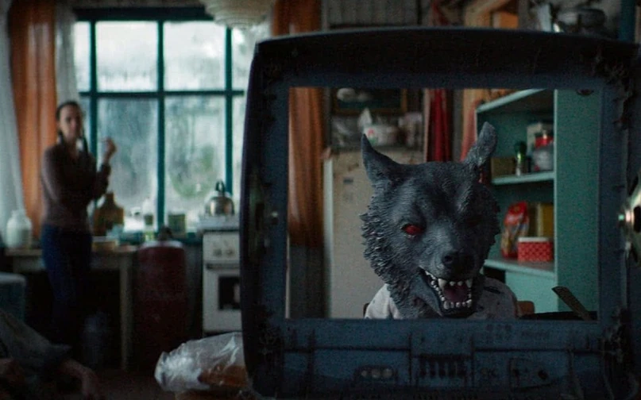

Выдуманные хищники и невыдуманная романтика русского захолустья: что мы увидели в новом фильме Валерии Гай Германики. И что предпочли бы не видеть
После «Школы» и «Все умрут, а я останусь» ожидать от Гай Германики можно было многого. В нашем случае — многого и при этом ничего хорошего. Однако сказочный и слегка психоделический сюр «Мысленный волк» оказался неплохим кинцом, которое как минимум запоминается.
И хоть фильм и не страдает чрезмерной метафоричностью, его все равно почему-то окутывает легчайший флер мема «Нихуя не понял, но очень интересно».

Сюжет незамысловат. Сценарист Юрий Абрамов написал по заказу Гай Германики мистическую притчу о «мысленном волке», этакой пустоте в душе человека, которую нужно чем-то подкармливать, чем-то заполнять. Героиня Лизы Климовой с маленьким сыном приезжает к своей матери — вовсю молодящейся тетке, сыгранной Юлией Высоцкой. Та живет в избушке среди суровых чащ, иногда ходит на сельские дискотеки и клеит там первых парней на деревне, которые любят женщин постарше. Дочь хочет уговорить мать продать дом и землю — подсобить молодой семье деньгами. Вот только отношения героинь уже давно испорчены и объединить их может только страх перед мистическим волком-людоедом, выдуманным (но это не точно) персонажем Высоцкой. Обеих женщин вы вряд ли будете прямо-таки понимать, да и сопереживать им особо не придется.
А все потому, что реалистичной эта лента выглядеть даже не пытается: очень часто она неуклюже театральна, и эта наигранность уместна далеко не в каждой сцене. Неловкие высокопарные реплики, без которых фильм-притча ну никак обойтись не мог, разбавляются, к счастью, перепалками главных героинь — местами на удивление живыми и ироничными.
В «Волке» вообще много забавных, нарочито абсурдных или нелепых моментов. Героиня Высоцкой одиноко живет в захолустье, но красуется густыми накладными ресницами. Она заговаривает молоко, бормоча попурри из «Отче наш» и «Интернационала». Знакомит зашедшего в гости чоткого парня в «Адидасе» с творчеством своей дочери, показывая ему на планшете картины Ван Гога. Многие из этих сцен — в духе «картинка смешная, а ситуация страшная». Героиня Климовой запросто теряет своего сына в ночном лесу. Дома, когда мальчик капризничает, перед ним ставят пустой корпус советского телевизора и дают пульт, чтобы успокоить бедное дите современности, которому необходимо смотреть на мир через экран. В целом получилось скорее грустно, чем смешно, но это кому как: мужик N, сидевший со мной рядом на сеансе, угорал прямо-таки неистово.

Некоторые с какого-то перепугу называют «Волка» хоррором. Откуда взялся этот перепуг — неясно. Самые зубастые волки живут лишь в головах персонажей. Кстати, о волках. Пока тот самый зверь находится вне кадра, оставаясь образом, страх перед которым должен ненадолго сплотить мать и дочь, он работает хорошо.
Пока волк остается маской, которую надевает маленький мальчик, или нарисованным хищником, или тенью на стене — все славно. Однако один раз он предстает перед нами в виде беспощадно графонистого Анубиса.
Чувства, которые вызывает это зрелище, вы можете понять, только если смотрели убогих «Гончих ада» 2009 года. Лучше бы волк остался совсем мысленным, ей-богу.
При этом в целом-то картинка радует. Локации выбраны отличные: навевающие первосортную русскую тоску, которая бренчит на струнах души что-то из репертуара «Любэ». Необъятный неприветливый лес, маленький обшарпанный домик среди белесых снегов, пустынная станция, куда прибывает электричка, — сразу хочется поехать на дачу, чтобы поэтично мерзнуть там, жаря на чугунной сковороде яичницу с докторской колбасой.
Естественно, постоянно кайфовать от картинки не получится, потому что красота кадра красотой кадра, а без нещадной съемки с рук возвышенное кино не делается. Вот, например: героини носятся по темной чаще, надеясь поскорее добраться до избушки и страшась невидимого хищника, — вы могли бы в этот момент наслаждаться чувством опасности, которая от вас далеко-далеко. Но вместе с персонажами по кочкам бегает и оператор, отчего камера трясется так, что вас начинает безбожно укачивать. Хотя это, вероятно, будет мучить только тех, кто отправится на просмотр фильма в кино. Кстати, если вы хотите проверить свою вестибулярку до официального старта «Волка», можете 16 октября наведаться в «Формулу кино Горизонт» — там пройдет очередной предупредительный показ.

Во время просмотра «Мысленного волка» есть что ловить — кроме знатной атмосферы цепляет напряженная музыка, четко задающая повествованию тон. Хороша и финальная сцена, сделанная в лучших традициях медленного телевидения, — ее можно было бы бездумно смотреть ну о-очень долго. Но только ее: в целом небольшой хронометраж ленты оказался кстати. Скромных 70 минут позволили мужику N не скопытиться в разгар пароксизма довольства, а мне — не погружаться в историю настолько, чтобы она успела наскучить.
Антураж антуражем, а «тотального предчувствия конца света» — понемножку. Чем дальше в лес — тем больше вероятность наткнуться на компьютерного Анубиса. Ну его к черту.